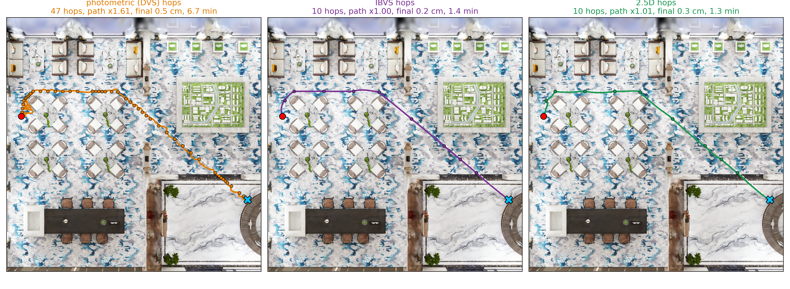

Visual servoing reaches a goal view with millimetre precision, but only from nearby. To reach a distant view, a planner must place intermediate key images, each reachable from the previous one. We render these key images from a 3D Gaussian Splatting map of the scene, which also serves as the simulator that validates every hop before it is executed.
Our planner bisects the path in SO(3)×R³ only where the simulated servo fails, so the number of key images adapts to the convergence domain of the controller. We show that validating each hop from its ideal waypoint does not certify execution, since every servo stops within a tolerance of its target, and we validate instead each hop from the pose the previous hop actually reached (chained validation).
We evaluate the planner with three hop controllers—photometric, point-based IBVS and 2.5D visual servoing—on 150 start–goal pairs and on routes of up to 18 m in InteriorGS houses, and compare it with the photometric planners P-A* and Photometric-Planner. A direct hop succeeds on 3–7 % of the pairs; the chained planner on 90–91 % with all three controllers, and geometric hops halve the number of key images and give straight paths.
We start from the straight path between start and goal, or from the navmesh route for long journeys. On each segment we render the key image at its end and simulate the servo in the map. Where it fails, we insert the midpoint (mean position, slerp of the orientation) and try again. Key images thus accumulate only where the controller needs them.
A servo stops as soon as its error falls below a threshold, a few millimetres to centimetres from its target. The next hop therefore starts from that offset pose, which independent validation never tested. We simulate each hop from the pose the previous hop actually reached, and bisect only when it fails from there: the validated plan is exactly the sequence of hops that execution runs. On 150 pairs, chaining raises success from 82.7 % to 90.0 % with photometric hops.
Photometric visual servoing regulates the pixel intensities. IBVS regulates SIFT points matched with the key image (e = s − s*, v = −λL+e). 2.5D visual servoing regulates an image point, the log depth ratio and the rotation θu. IBVS and 2.5D share one measurement: matches lifted to 3D with the key image's rendered depth and filtered by PnP-RANSAC. Where matching fails, the planner tries a photometric hop on that segment.

Direct hop
3–7 %
Chained planner
90–91 %
Key images
8 → 4
Path length
×1.65 → ×1.00
| Hop | Planner | Success | Waypoints | Path length | Max deviation | Final error | Planning |
|---|---|---|---|---|---|---|---|
| photometric | Direct | 2.7 % | 2 | 1.20 | 22 % | 270 cm | 0 s |
| photometric | Uniform, 10 hops | 53.3 % | 11 | 1.31 | 7 % | 1.5 cm | 0 s |
| photometric | Dichotomic | 82.7 % | 9 | 1.63 | 11 % | 0.8 cm | 42 s |
| photometric | Dichotomic + chained (ours) | 90.0 % | 8 | 1.65 | 14 % | 0.8 cm | 68 s |
| IBVS | Dichotomic + chained (ours) | 91.3 % | 4 | 1.00 | 1 % | 0.2 cm | 15 s |
| 2.5D | Dichotomic + chained (ours) | 90.7 % | 4 | 1.01 | 3 % | 0.5 cm | 19 s |
Pairs 1.5–5 m apart. Success: final error below 5 cm and 2°. Medians except success; path length and deviation over successes. P-A* and Photometric-Planner on the 150 pairs: in progress.
Long routes through InteriorGS houses, planned and executed with the chained planner: photometric, IBVS and 2.5D hops. The 3D view replays the run in your browser: the Gaussian map without its ceiling, the three paths, the key images on their frustums and one camera per controller. Drag to orbit, scroll to zoom.
Video
3D view (viser)